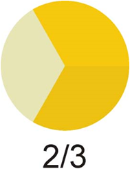
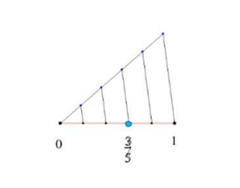
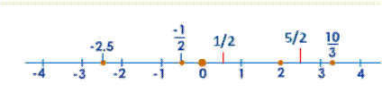

Hay situaciones en las que los números enteros no son suficientes:
–Cuando una división no es exacta

–Cuando quiero expresar una parte de la unidad

En estas situaciones necesitamos las fracciones. Cuando añadimos las fracciones a los números enteros obtenemos los números racionales, Q.
Los representamos en una recta. Por ejemplo, para representar 3/5:
–Dibujamos una recta que pase por 0
–Señalamos 5 marcas a igual
distancia con un compás
–Unimos la última marca con 1
y dibujamos rectas paralelas

Ejercicio. Representa estos números en la recta: -7, 5, 1/5, -2/3, 7/3, 3/2, -9/5